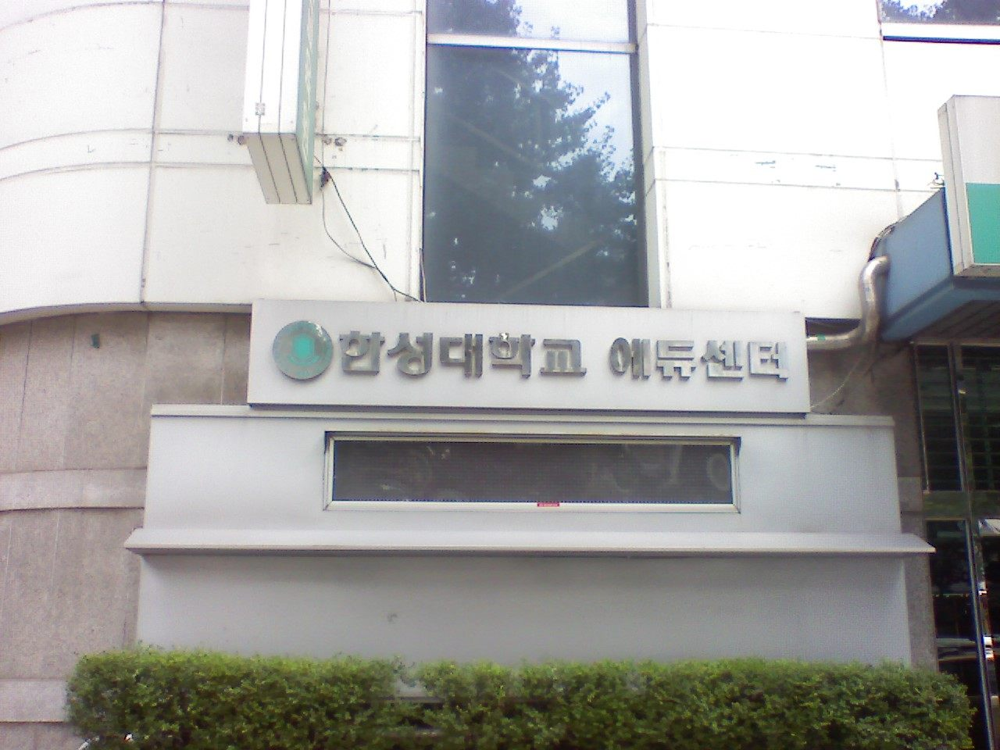

한성대학교는 서울특별시 성북구 삼선교로에 있는 사립대학입니다. 1972년에 문을 열었고, 지하철 4호선 한성대입구역에서 걸어서 닿는 도심 캠퍼스입니다. 주간과 야간 과정을 함께 운영하는 대학이기도 합니다.
2027학년도 수시 원서접수는 2026년 9월 7일 오전 10시부터 9월 11일 오후 6시까지 진행돼 이미 마감됐습니다. 그래서 오늘 이 글을 읽으실 분은 대부분 고1·고2 학부모님이실 것입니다. 경쟁률 이야기보다 이 대학의 전형이 어떻게 생겼는지를 보는 편이 지금은 훨씬 쓸모가 있습니다. 구조를 알면 남은 1~2년에 무엇을 쌓을지가 정해지기 때문입니다.
수시로 1,139명, 정원의 69%를 뽑습니다
2027학년도 한성대학교의 수시 모집 규모는 1,139명으로 발표됐습니다. 전체 모집정원의 69%에 해당합니다. 열 자리 중 일곱 자리가 수시에서 채워진다는 뜻입니다.
대표 전형은 네 개입니다.
- 교과우수전형(학생부교과) — 260명
- 지역균형전형(학생부교과) — 188명
- 한성인재전형(학생부종합) — 310명. 전년 대비 10명 늘었습니다.
- 실기우수자전형(실기) — 128명
여기서 바로 눈에 띄는 것이 있습니다. 가장 큰 전형이 학생부종합이라는 점입니다. 학생부교과 두 전형을 합치면 448명으로 숫자는 더 크지만, 단일 전형으로는 한성인재전형 310명이 가장 큽니다. 그리고 이 전형이 작년보다 늘었습니다. 대학이 어느 쪽에 무게를 두고 있는지가 숫자에 드러납니다.
가장 큰 전형에 면접이 없습니다
학생부종합이라고 하면 많은 가정이 먼저 면접을 떠올리십니다. 한성대학교 한성인재전형은 면접이 없습니다. 서류평가 100%로 선발합니다. 그리고 수능최저학력기준도 없습니다.
이 조합이 뜻하는 바는 분명합니다. 합격과 불합격을 가르는 자료가 학교생활기록부 하나라는 것입니다. 면접에서 만회할 기회도, 수능 성적으로 걸러지는 경쟁자도 없습니다. 고등학교 3년 동안 쌓인 기록이 그대로 평가지가 됩니다.
평가 방식에서 하나 더 알아 두실 것이 있습니다. 한성대학교는 이 전형의 서류평가를 블라인드로 진행한다고 안내했습니다. 수험생 정보와 고교 정보를 가린 채 평가한다는 뜻입니다. 어느 학교를 다녔는지가 아니라 그 안에서 무엇을 했는지만 남는 구조입니다.
고1·고2 가정에서 이 한 문장이 주는 메시지는 이렇습니다. 학교 이름으로 보완되는 부분을 기대하기 어려우므로, 지금 다니는 학교 안에서 기록을 만드는 일이 전부가 됩니다. 수업에서 한 활동, 그 활동을 왜 했고 무엇이 어려웠는지. 고3 여름에 몰아서 만들 수 있는 것이 아닙니다.
학생부교과는 둘로 갈립니다 — 수능최저가 있는 쪽과 없는 쪽
교과 성적으로 가는 길은 두 개인데, 성격이 정반대입니다.
- 교과우수전형(260명) — 교과 성적으로 선발하되 수능최저학력기준을 적용합니다.
- 지역균형전형(188명) — 교과 성적으로 선발하고 수능최저를 적용하지 않습니다. 대신 학교장추천이 필요한 전형으로 안내됐습니다.
수능최저 기준은 주간과 야간이 다릅니다. 주간 모집단위는 수능 2개 영역 등급 합 7등급 이내, 야간 모집단위는 8등급 이내입니다. 한성대학교가 주간·야간을 함께 운영하는 대학이라는 점이 지원 전략에 실제로 영향을 주는 자리가 여기입니다. 같은 대학 안에서도 넘어야 할 수능 문턱이 한 등급 차이로 달라집니다.
‘2개 영역 합 7’은 어느 정도일까요. 두 과목 평균이 3등급 중후반이면 닿는 수준입니다. 아주 높은 기준은 아니지만, 수능을 아예 놓은 학생에게는 닿지 않는 기준이기도 합니다. 해마다 내신은 충분한데 최저를 못 맞춰 떨어지는 지원자가 나오는 이유입니다.
반대로 지역균형전형은 수능 부담이 없습니다. 다만 학교장추천이라는 문이 하나 더 있습니다. 추천 인원은 학교마다 한정되므로, 교내에서 먼저 순위가 정해집니다. 이 전형을 생각하신다면 고3 봄이 아니라 고1·고2 내신에서 승부가 난다고 보시는 편이 맞습니다.
교과 반영 과목 수가 다릅니다 — 두 전형의 진짜 차이
두 전형의 차이는 수능최저만이 아닙니다. 성적을 어디까지 가져가느냐가 다릅니다.
- 교과우수전형 — 교과별로 상위 3과목씩을 뽑아, 진로선택 3과목을 포함해 모두 12과목을 반영한다고 안내됐습니다. 국어·영어·수학이 필수로 들어가고, 여기에 계열별 교과가 더해집니다(인문계열은 사회, 공과계열은 과학).
- 지역균형전형 — 전 교과목을 반영합니다. 석차등급이 기재된 과목을 모두 가져갑니다.
이 한 줄이 가정마다 다른 결론을 냅니다. 잘한 과목과 못한 과목의 편차가 큰 학생은 교과우수전형이 유리합니다. 과목별 상위 3개만 올라가니 망친 과목이 가려집니다. 반대로 전 과목을 고르게 끌고 온 학생은 지역균형전형에서 손해를 보지 않습니다.
그래서 고1·고2 가정에서 지금 점검하실 것은 이것입니다. 성적표를 펴 놓고 과목 간 등급 차이가 얼마나 벌어져 있는지 보세요. 편차가 크면 교과우수 쪽을 보면서 수능 2개 영역을 함께 준비하는 그림이 되고, 고르면 지역균형 쪽을 보면서 교내 추천 순위를 챙기는 그림이 됩니다. 같은 내신 등급이라도 가야 할 길이 갈립니다.
학부로 입학해 2학년에 전공을 고릅니다
한성대학교를 다른 대학과 구분 짓는 특징이 이것입니다. 전공트랙제입니다.
학생은 세부 전공이 아니라 학부 단위로 입학합니다. 입학할 때는 트랙이 나뉘어 있지 않고, 2학년에 올라갈 때 전공(트랙)을 자유롭게 고릅니다. 1학년 1년을 전공을 정하는 시간으로 쓰는 구조입니다.
이 구조가 중요한 이유는 고등학생 가정에서 가장 흔한 고민 하나를 덜어 주기 때문입니다. “아이가 뭘 하고 싶은지 아직 몰라요.” 많은 대학에서 이 상태는 불리합니다. 학과를 먼저 정하고 지원해야 하고, 학생부종합에서는 전공적합성까지 평가받습니다. 한성대학교는 그 결정을 1년 뒤로 미뤄 둘 수 있습니다.
한 걸음 더 나간 모집단위도 있습니다. 상상력인재학부라는 자율전공 성격의 학부로, 한성인재전형에서 28명을 뽑습니다. 이 학부는 평가 기준부터 다릅니다. 대학 안내에 따르면 전공적합성이 아니라 자기주도성과 창의적 문제해결력을 중심으로 본다고 돼 있습니다.
진로가 확실한 학생에게 이 구조가 더 좋다는 뜻은 아닙니다. 다만 관심은 넓은데 하나로 좁히지 못한 학생에게는 다른 대학에서 찾기 어려운 선택지입니다. 생활기록부에 여러 갈래 활동이 섞여 있어서 “일관성이 없다”는 평가를 걱정하셨다면, 이 대학은 그 걱정의 무게가 조금 덜한 곳입니다.
실기로 가는 길 — 실기우수자전형
예체능을 준비하는 가정이 보실 칸입니다. 실기우수자전형으로 128명을 모집합니다. 무용, 회화, AI융합디자인학부가 해당합니다.
반영 비율은 실기 80% + 학생부교과 20%입니다. 실기의 비중이 압도적이지만 교과가 0은 아니라는 점은 기억해 두실 만합니다. 실기고사 일정은 무용 10월 17일(한국무용·현대무용·발레), AI융합디자인 10월 18일, 회화 10월 25일(동양화·서양화)로 안내됐습니다.
다만 종목별 실기 과제와 평가 방법, 교과 20%의 반영 과목 기준은 확인하지 못해 이 글에 적지 않았습니다. 실기 전형은 세부 조건이 해마다 바뀌는 경우가 많으므로 반드시 모집요강에서 확인하셔야 합니다.
지역인재 전형은 없습니다 — 대신 알아 둘 것
지역인재 전형을 찾으시는 가정이 계실 텐데, 한성대학교는 서울 소재 대학이라 지역인재 전형이 없습니다. 지역인재는 비수도권 대학이 그 지역 고등학교 출신 학생을 뽑는 제도입니다. 한성대학교에서 이름이 비슷해 혼동되는 것은 지역균형전형인데, 이것은 거주 지역과 무관한 학교장추천 전형입니다.
지역인재를 함께 고민하고 계신 가정이라면 기준만 알아 두시면 됩니다. 2027학년도 지역인재 지원 자격은 해당 권역 고등학교에서 전 교육과정(3년)을 이수한 학생이고, 중학교 과정까지 해당 지역에서 다녀야 하는 강화된 요건은 2028학년도부터 적용됩니다. 지방 대학과 서울 대학을 함께 놓고 보실 때 이 한 줄이 기준이 됩니다.
지원 전 체크리스트
- 면접 준비가 필요한가. 가장 큰 전형인 한성인재전형은 면접이 없습니다. 서류가 전부입니다. 말하기 연습보다 기록을 남기는 쪽에 시간을 쓰세요.
- 과목 간 편차가 큰가. 크면 교과우수전형(교과별 상위 3과목·총 12과목), 고르면 지역균형전형(전 교과목)입니다. 성적표를 펴서 먼저 확인하세요.
- 주간인가 야간인가. 교과우수전형의 수능최저가 주간 2개 합 7, 야간 2개 합 8로 다릅니다.
- 학교장추천을 받을 수 있는가. 지역균형전형은 수능 부담이 없는 대신 교내에서 먼저 순위가 정해집니다.
- 전공을 아직 못 정했는가. 학부로 입학해 2학년에 전공을 고르는 구조이고, 자율전공 성격의 상상력인재학부도 있습니다.
- 수능을 놓을 것인가. 수능최저가 없는 전형이 있어도 정시 카드는 수능으로만 생깁니다. 2027학년도 수능은 2026년 11월 19일입니다.
마무리하며
한성대학교의 2027학년도 수시를 한 줄로 줄이면 이렇습니다. 가장 큰 전형이 서류 하나로 끝나고, 교과 전형은 수능최저가 있는 쪽과 없는 쪽으로 갈리며, 전공은 입학 뒤에 고른다.
이 세 가지가 함께 가리키는 방향이 있습니다. 이 대학은 고등학교 3년을 꾸준히 채운 학생에게 열려 있되, 그 3년이 하나의 진로로 수렴하지 않아도 괜찮은 구조입니다. 진로를 일찍 정한 학생에게만 유리한 입시가 아니라는 뜻입니다.
그래서 고1·고2가 지금 할 일도 특별하지 않습니다. 과목 간 편차를 줄이거나 잘하는 과목을 더 끌어올리는 것, 수업에서 한 활동을 그때그때 적어 두는 것, 그리고 수능 두 영역 정도는 손에서 놓지 않는 것. 평범하지만 이 대학에서는 그대로 통하는 준비입니다.
와와 학습코칭센터에서는 아이의 학년과 성적 흐름에 맞춰 목표 대학과 전형을 함께 정리해 드립니다. 교과로 갈지 서류로 갈지, 수능최저를 챙길지부터 막막하시다면 가까운 센터에서 상담을 신청해 보세요.
※ 본 글은 한성대학교 2027학년도 수시모집 관련 언론 보도를 바탕으로 정리했습니다. 인용한 모집 인원과 전형 방법은 보도 시점에 발표된 내용입니다. 모집단위별 세부 모집 인원, 학생부 등급 환산 방식과 진로선택과목 반영·가산 방법, 서류평가의 항목별 반영 비율, 지역균형전형의 학교장추천 인원 기준, 기회균형·사회통합 등 특별전형의 지원 자격, 실기우수자전형의 종목별 과제와 평가 방법, 주간·야간 모집단위의 구체적 범위, 전공트랙제의 트랙 선택 절차와 인원 제한, 장학금 제도, 경쟁률은 확인하지 못해 이 글에 담지 않았습니다. 확인되지 않은 숫자와 기준은 기재하지 않았습니다. 사진은 2008년 7월에 촬영된 것으로 현재 모습과 다를 수 있습니다. 세부 사항은 모집요강에서 확정되며 변경될 수 있으므로, 반드시 한성대학교 입학처의 2027학년도 수시모집요강 원문에서 본인 지원 모집단위 기준으로 최종 확인하시기 바랍니다.